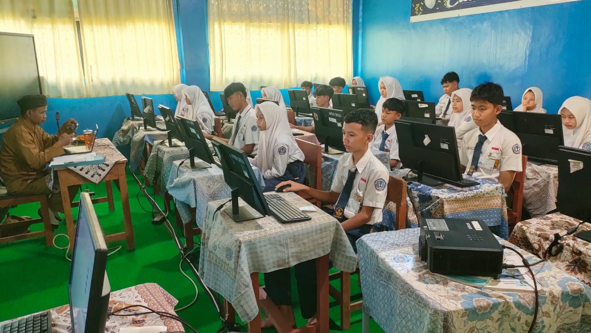

Kegiatan Tes Kemampuan Akademik (TKA) 2026
6 April 2026


SMPN 2 Kresek menyelenggarakan Tes Kemampuan Akademik (TKA) gelombang 1 yang diikuti sebanyak 88 siswa/siswi kelas 9 Tahun Pelajaran 2025/2026 pada hari Senin, 06 April 2026.
TKA diselenggarakan di laboratorium komputer SMPN 2 Kresek dan dibagi dalam 4 sesi.
Siswa-siswi mengikuti TKA mata pelajaran Matematika di hari pertama ini dengan fokus dan tertib.
← Kembali